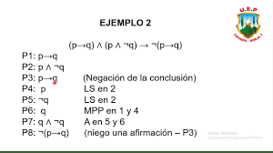
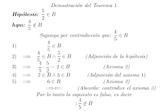

REDUCCION NATURAL
Los métodos que hemos visto hasta ahora para comprobar validez lógica, han sido, algunos muy extensos (tabla de verdad) y otros no muy directos (figuras del silogismo) con poca capacidad de análisis para argumento con más de 2 premisas.
Este método (Deducción Natural) mejorara el cálculo de validez lógica aplicando reglas de inferencia (Ver documento de reglas), reglas que son útiles para argumentos con más de 2 premisas, se complementa el estudio con las reglas de reemplazo.
El método de deducción natural es simple, versátil y efectivo, éste permitirá analizar rápidamente validez de un enunciado lógico previamente formalizado. La deducción natural sigue un método directo con el cual llegaremos fácilmente a comprobar la conclusión, este método permite tener tantas premisas como se quiera, sin tener que construir grandes tablas de verdad o analizar premisas muy complejas, algo que no puede trabajarse fácilmente por los métodos antes expuestos.
|
|
|
|---|---|
|  |  |